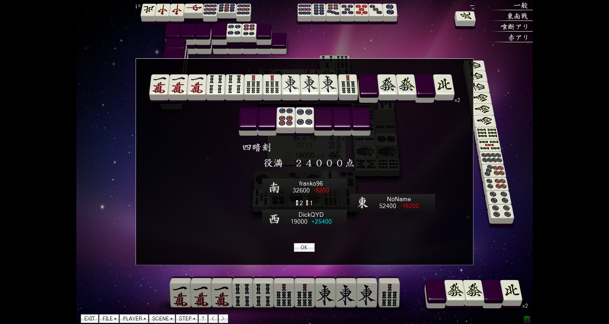

這裡將介紹一些與日本麻將相關的網站，還有一些可以遊玩日本麻將的網路遊戲。歡迎大家多多參考。
天鳳
《天鳳》是日本伺服器提供的日本麻將網路遊戲。目前由C-EGG有限公司負責營運。2006年2月20日，名為「半熟荘」的β測試版推出。2006年8月1日，遊戲正式推出。2007年3月1日改為現在的名稱。
原則上該遊戲是免費的。 如果設備安裝有Adobe公司的Adobe Flash或使用支援HTML5的瀏覽器遊戲時可以不安裝專用的軟體就可以使用，這也是該遊戲的一大特徵。 2008年2月開始，推出了Windows平台上可使用的、帶有豪華的介面的收費版。收費版用戶可以和免費版用戶一起遊戲，並擁有更加美麗的介面，還可以使用牌譜保存和分析等附加功能。
順帶一提，這也是筆者常玩的遊戲，而圖中的四暗刻正是筆者和出來的。